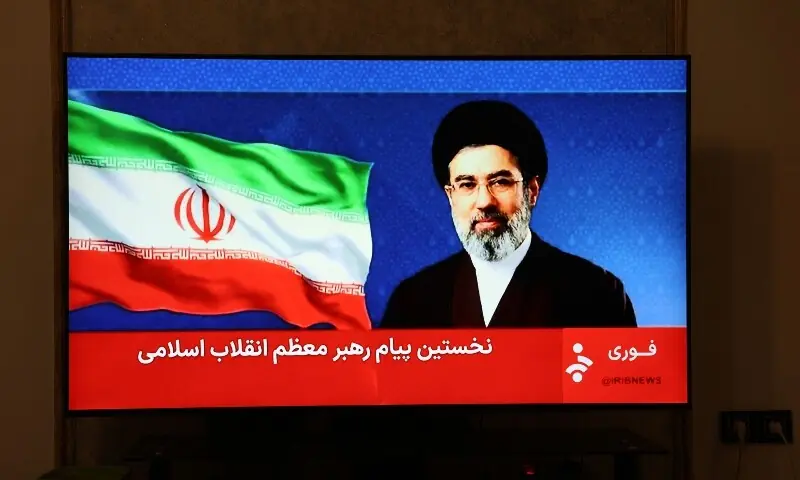

In first remarks, Iran’s new supreme leader vows to avenge martyrs, keep Strait of Hormuz closed


In a highly anticipated and closely watched speech, Iran's new supreme leader, Mojtaba Khamenei, delivered his first remarks, vowing to avenge the country's martyrs and maintain the closure of the strategic Strait of Hormuz. The statement has sparked widespread concern and escalated tensions between Iran and the United States, with the international community bracing for a potential conflict in the Middle East.
Table of Contents
Key Takeaways
- Iran's new supreme leader, Mojtaba Khamenei, has vowed to avenge the country's martyrs and maintain the closure of the Strait of Hormuz.
- The statement has escalated tensions between Iran and the US, with the international community bracing for a potential conflict.
- The closure of the Strait of Hormuz could disrupt global oil supplies and have significant economic implications.
- Iran's regional allies, including Hezbollah and the Houthis, have expressed support for the country's stance.
Introduction to Iran-US Conflict
The Iran-US conflict has been escalating in recent years, with both countries engaging in a war of words and proxy battles in the Middle East. The conflict has been fueled by a range of factors, including disagreements over Iran's nuclear program, US sanctions, and regional influence. The situation has become increasingly volatile, with both sides issuing threats and warnings.
Mojtaba Khamenei's Statement and Its Implications
Mojtaba Khamenei's statement has significant implications for the region and the world. The vow to avenge Iran's martyrs and maintain the closure of the Strait of Hormuz is a clear indication of the country's determination to stand up to the US and its allies. The statement has been seen as a call to action for Iran's regional allies, including Hezbollah and the Houthis, who have expressed support for the country's stance.
Also Read
Check out more trending news hereIran's Revenge Statement
"We will not rest until we have avenged the blood of our martyrs and defended our nation's interests," Mojtaba Khamenei said in his statement. The statement has been seen as a clear warning to the US and its allies, who have been accused of meddling in Iran's internal affairs.
Strait of Hormuz Crisis and Global Oil Market
The closure of the Strait of Hormuz has significant implications for the global oil market. The strait is a critical waterway, with over 20% of the world's oil passing through it. A disruption to oil supplies could have significant economic implications, with prices likely to rise and trade disrupted.
| Country | Oil Production (barrels per day) | Oil Exports (barrels per day) |
|---|---|---|
| Saudi Arabia | 12 million | 7 million |
| Iraq | 4 million | 3 million |
| Iran | 4 million | 2 million |
Global Oil Supply Disruption
The closure of the Strait of Hormuz could disrupt global oil supplies, with significant economic implications. The US has accused Iran of attacking oil tankers in the Gulf, which has escalated tensions between the two countries. The situation has become increasingly volatile, with both sides issuing threats and warnings.
Iran's Regional Allies and Military Escalation
Iran's regional allies, including Hezbollah and the Houthis, have expressed support for the country's stance. The groups have been accused of carrying out attacks on behalf of Iran, which has escalated tensions in the region. The situation has become increasingly volatile, with both sides issuing threats and warnings.
Iran's Military Warning to US
"We will not hesitate to attack US military bases in the region if they continue to threaten our nation's interests," a senior Iranian military official said. The statement has been seen as a clear warning to the US, which has accused Iran of attacking its bases in the region.
Conclusion
In conclusion, the situation in the Middle East has become increasingly volatile, with Iran's new supreme leader vowing to avenge the country's martyrs and maintain the closure of the Strait of Hormuz. The statement has escalated tensions between Iran and the US, with the international community bracing for a potential conflict. The closure of the Strait of Hormuz could disrupt global oil supplies, with significant economic implications. As the situation continues to unfold, it remains to be seen how the US and its allies will respond to Iran's stance.
Sarah Mitchell
Senior Tech Editor
Tech journalist with 8+ years of experience bringing you the most accurate breaking news, unbiased reviews, and deep insights from the tech and auto world.
Leave a Comment